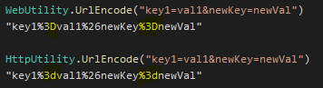

如何对HttpResponse.OnStarting()进行单元测试
之前一篇AspNetCore服务端读写浏览器Cookie里使用了HttpResponse.OnStarting()方法通过注册回调来实现往Response里写入cookie。本篇我们看一下如何对其进行单元测试。
¶测试HttpResponse.OnStarting()
对HttpResponse进行测试&验证，离不开HttpContext以及一个Mock HttpResponse。首先我们尝试Mock一个HttpContext，并且Http Request和Response都直接用Mock。
1 | var requestMock = new Mock<HttpRequest>(); |
Mock HttpResponse.OnStarting()的Setup可以借助Moq Callback来获取最终调用的回调方法，并放在next里触发回调方法的调用[1]，代码如下：
1 | Func<object, Task> callbackMethod = null; |
有了上面的Mock代码，下面的单元测试确实可以触发callback方法的调用了，但是测试却通不过，因为代码context.Response.Cookies.Append(targetCookieName, cookieString);将cookie写入response后，不管通过responseMock.Object.GetTypedHeaders().SetCookie还是_responseMock.Object.Headers["Set-Cookie"]都无法获取到cookie的值。
1 | [] |
因为上面的尝试无法让测试通过，我们不得不另寻他法。研究一番发现有个IHttpResponseFeature这样的接口也可以Mock Response的状态和信息[2]，然后通过HttpContext.Features.Set()将Mock的Respnose注入。那现在我们借助DefaultHttpContext，这样可以解决上面遇到的问题。其实Mock IHttpResponseFeature和Mock HttpResponse差不多，代码如下：
1 | var responseMock = new Mock<IHttpResponseFeature>(); |
基于上面新的Mock代码，下面的单元测试代码就可以顺利通过了。
1 | [] |
¶扩展
仔细看的话，上面单元测试的代码里直接通过 _httpContextMock.Request.Headers["Cookie"] = "cookie11=key1=val1"; 来设置Http Request的cookie值，这就是采用DefaultHttpContext带来的便捷。
那么是否可以直接Mock Request里的cookie呢，答案是肯定的，有个IRequestCookiesFeature接口[3]可以用来Mock，然后直接注入DefaultHttpContext。代码如下：
1 | _httpContextMock = new DefaultHttpContext(); |
基于上面新的Mock代码，改造后的单元测试里直接Mock IRequestCookieCollection的TryGetValue[4], out值通过一个本地变量定义[5]，测试顺利通过。
1 | [] |
除了本篇用到的IHttpResponseFeature、IRequestCookiesFeature，还有很多其他的Feature[6]，例如IHttpRequestFeature等，可以借助它们做很多其他事情。
另外，上面的单元测试里校验cookie时借助了WebUtility.UrlEncode，它和HttpUtility.UrlEncode略有不同[7]。WebUtility encode后的符号的编码是大写，而HttpUtility则是小写。

¶结语
在进行HttpContext相关的单元测试时，优先借助DefaultHttpContext可以减少很多不必要的Mock代码。尽量借助相关的Feature[6:1]来进行Mock，也会达到事半功倍的效果。
¶源码
https://www.appsloveworld.com/csharp/100/302/how-to-unit-test-a-net-middleware-that-uses-response-onstarting ↩︎
https://learn.microsoft.com/en-us/dotnet/api/microsoft.aspnetcore.http.features.ihttpresponsefeature ↩︎
https://learn.microsoft.com/en-us/dotnet/api/microsoft.aspnetcore.http.features.irequestcookiesfeature ↩︎
https://github.com/dotnet/aspnetcore/issues/18193#issuecomment-572938829 ↩︎
https://www.codeproject.com/Articles/5286617/Moq-and-out-Parameter ↩︎
https://learn.microsoft.com/en-us/dotnet/api/microsoft.aspnetcore.http.features ↩︎ ↩︎
https://edi.wang/post/2018/11/25/netcore-webutility-urlencode-httputility-urlencode ↩︎